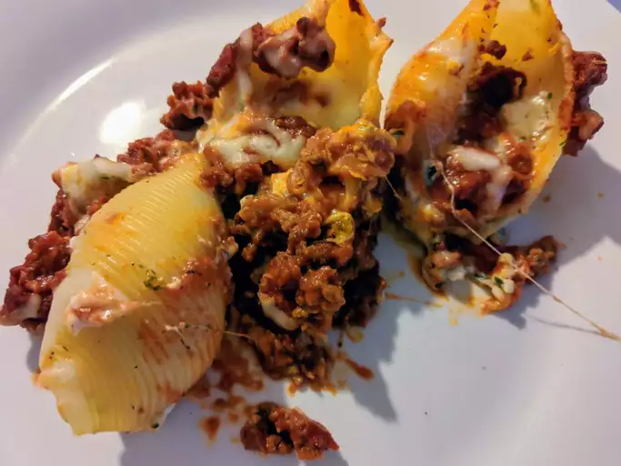

Lasagna

Description
A delicious reimagining of the beloved classic, enjoy lasagna stuffed shells!
Ingredients
- 18 jumbo pasta shells
- 1.5 pounds ground beef
- 2 tbsp chopped onion
- 12oz tomato paste
- half tsp salt
- half tsp garlic powder
- 2 eggs
- 3 cups cottage cheese
- 16oz packaged shredded mozzarella cheese
Steps
- Preheat an oven to 375 degrees F (190 degrees C). Fill a large pot with lightly-salted water and bring to a rolling boil; stir in the shell pasta and return to a boil. Cook the pasta uncovered, stirring occasionally, until the pasta has nearly cooked through but still very firm to the bite, about 5 minutes. Drain well and rinse with cold water.
- While the shells are cooking, heat a large skillet over medium-high heat; cook and stir the beef and onion in the hot skillet until the beef is crumbly, evenly browned, and no longer pink. Drain and discard any excess grease; stir in the tomato paste, tomato sauce, salt, oregano, and garlic powder. Bring to a simmer and cook for 5 minutes. Spread half of the sauce into a 9x13-inch baking dish.
- Beat the eggs in a mixing bowl. Stir in the cottage cheese, 3/4 of the mozzarella cheese, Parmesan cheese, parsley, salt, and pepper. Spoon the cheese mixture into the shells and set them into the prepared baking dish. Once all the shells have been filled, pour the remaining meat sauce over the shells and sprinkle with the remaining mozzarella cheese.
- Bake in the preheated oven until the shells are hot in the center and the mozzarella cheese is melted and bubbly, 25 to 30 minutes.